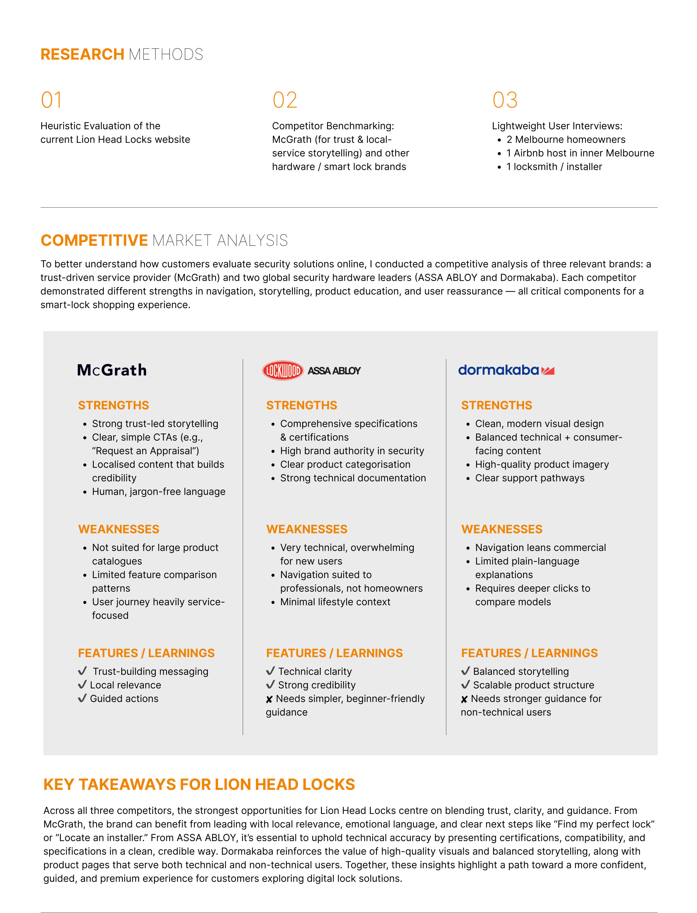
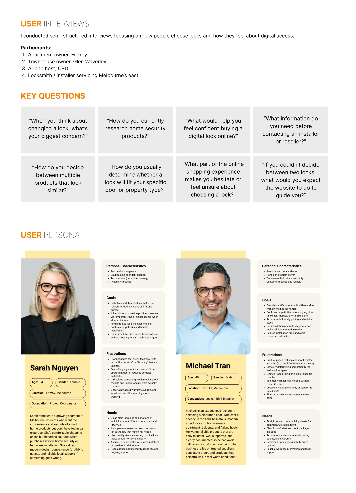
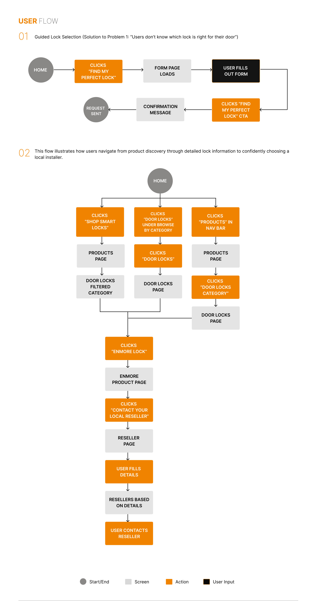
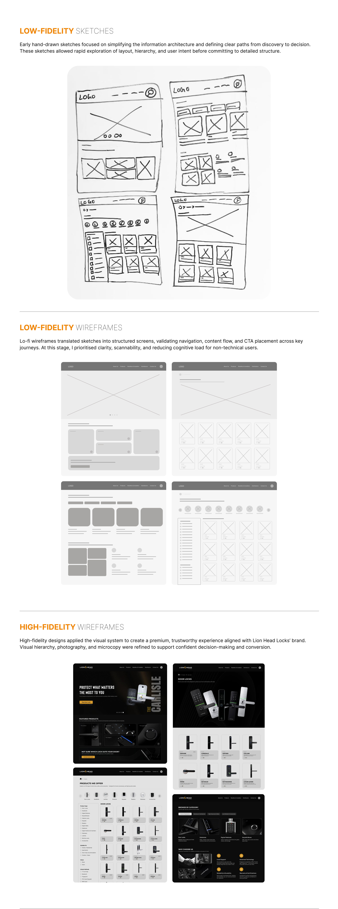
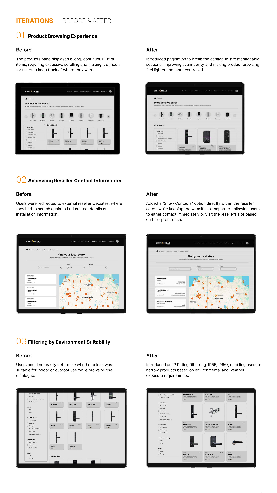

Product discovery is overwhelming for everyday users.
The existing site presents a long list of lock categories—door locks, mortice locks, gateways, padlocks, readers, and more—with minimal guidance on which product fits which door or use case.
Digital experience Melbourne, Australia
A product-led website for Lion Head Locks, presenting smart lock products through a distinctive black and gold visual system.
 Selected project visual
Selected project visual
INTERACTIVE PROTOTYPE
Explore the interactive website flow in Figma. The prototype opens in a new tab.
UI/UX CASE STUDY
LionHead Locks — From a product catalogue to a guided, trustworthy smart-lock experience.
01 / PROJECT OVERVIEW
Lion Head Locks sells premium digital locks and access products across Australia, but their website wasn’t designed to support everyday users who needed simple guidance and reassurance. Customers often struggled to identify the right lock or find local installation support. My redesign transforms the catalogue-style website into a clear, high-trust experience that helps Melbourne and Australian customers confidently choose and install the right smart lock.
02 / THE CHALLENGE
The existing site presents a long list of lock categories—door locks, mortice locks, gateways, padlocks, readers, and more—with minimal guidance on which product fits which door or use case.
The homepage leads with dense paragraphs of copy and a simple, rotating product slider, which doesn’t communicate the emotional or functional value of the locks for Australian households.
03 / POTENTIAL SOLUTIONS
Design flows that start with door type, location, and unlock preferences instead of lock model numbers.
Introduce a “Find my perfect lock” pathway and use clear, jargon-free language to support first-time buyers.
Use high-impact hero imagery, strong typography, and clear hierarchy. Embed warranty information, testimonials, Australian support, and a store locator into key journeys.
The process allows iteration from testing back to definition and ideation, refining both the problem framing and the proposed solutions.
04 / RESEARCH & INSIGHTS
Review of the current Lion Head Locks website.
McGrath for trust and local-service storytelling, alongside security hardware brands ASSA ABLOY and Dormakaba.
Two Melbourne homeowners, one Airbnb host in inner Melbourne, and one locksmith / installer.
To better understand how customers evaluate security solutions online, I conducted a competitive analysis of three relevant brands: a trust-driven service provider, McGrath, and two global security hardware leaders, ASSA ABLOY and Dormakaba. Each demonstrated different strengths in navigation, storytelling, product education, and user reassurance.

Build trust through local relevance and guided actions.
Preserve technical clarity and credibility while providing simpler guidance.
Combine balanced storytelling and scalable product structure with stronger guidance for non-technical users.
The strongest opportunity is to blend trust, clarity, and guidance. Local relevance and emotional language support clear next steps such as “Find my perfect lock” or “Locate an installer.” Certifications, compatibility, and specifications need a clean, credible presentation, while high-quality visuals and balanced storytelling serve both technical and non-technical users.
I conducted semi-structured interviews focusing on how people choose locks and how they feel about digital access.
05 / WHO IT SERVES

34 · Project Coordinator · Fitzroy, Melbourne
Practical, organised, cautious, and curious about technology. Sarah wants the convenience and security of smart-home products without needing technical expertise. She values modern design, convenience for Airbnb guests, and reliable local support.
Plain-language explanations, a shorter list of suitable options, realistic product visuals, access to local installers, and reassurance about security and ongoing support.
40 · Locksmith & Installer · Box Hill, Melbourne
Practical, detail-oriented, hands-on, and customer-focused. Michael has over a decade of experience servicing Melbourne’s east. He needs reliable, well-supported products with clear documentation to avoid callbacks and customer confusion.
Compatibility charts, package contents, installation manuals and wiring guides, trade or bulk-order options, and reliable warranty information with local support.
06 / PROJECT GOALS
Before heading on to finding ideas for a solution, I mapped out the business goals, user goals, and technical considerations.
07 / USER FLOWS
Home → “Find my perfect lock” → Form page → User enters their details and door requirements → Submit request → Confirmation message.

Visitors can start with “Shop Smart Locks,” a category on the homepage, or Products in the navigation. These paths lead to door-lock browsing, a selected product such as Enmore, and a route to local resellers and installers. Visitors provide their location, review matching resellers, and contact a local partner.
08 / VISUAL DESIGN
Early hand-drawn sketches focused on simplifying the information architecture and defining clear paths from discovery to decision. These sketches allowed rapid exploration of layout, hierarchy, and user intent before committing to detailed structure.

Lo-fi wireframes translated sketches into structured screens, validating navigation, content flow, and CTA placement across key journeys. At this stage, I prioritised clarity, scannability, and reducing cognitive load for non-technical users.
High-fidelity designs applied the visual system to create a premium, trustworthy experience aligned with Lion Head Locks’ brand. Visual hierarchy, photography, and microcopy were refined to support confident decision-making and conversion.
09 / ITERATIONS
The products page displayed a long, continuous list of items, requiring excessive scrolling and making it difficult for users to keep track of where they were.

Introduced pagination to break the catalogue into manageable sections, improving scannability and making product browsing feel lighter and more controlled.
Users were redirected to external reseller websites, where they had to search again to find contact details or installation information.
Added a “Show Contacts” option directly within the reseller cards, while keeping the website link separate—allowing users to contact immediately or visit the reseller’s site based on their preference.
Users could not easily determine whether a lock was suitable for indoor or outdoor use while browsing the catalogue.
Introduced an IP Rating filter, such as IP55 and IP66, enabling users to narrow products based on environmental and weather exposure requirements.
10 / RESULTS
The project case study reports the following usability testing results.
All participants were able to browse products, apply filters, and navigate pagination without confusion or external guidance.
All users located reseller contact details directly on the site, without searching external websites for phone numbers or emails.
All participants identified environment-appropriate locks using the IP rating filter, without opening multiple product pages.
The redesign creates a seamless journey from exploration to confident decision-making. A premium website establishes trust, while a structured and scannable product catalogue makes browsing effortless. Product pages balance visual storytelling with practical details, and clear support paths—Find my perfect lock, reseller finder, and contact options—ensure users can easily get help or take action at any point.
By simplifying product discovery and strengthening support pathways, the experience lays the foundation for long-term customer confidence and brand growth.
A guided, premium experience that helps Australian customers move from product discovery to confident lock selection and local support.